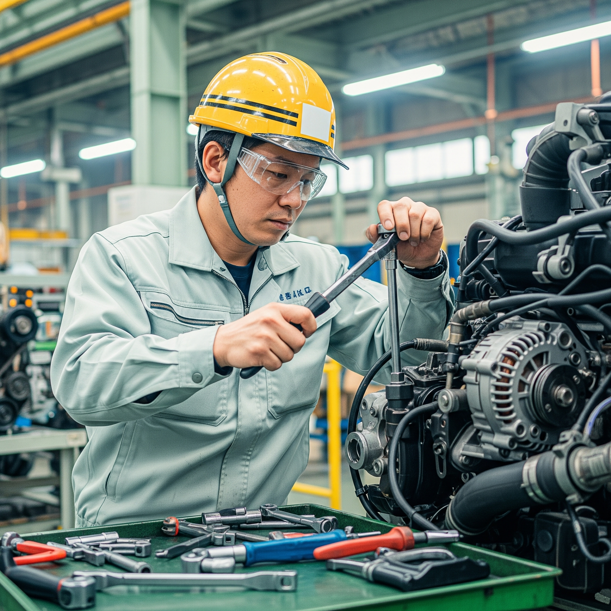
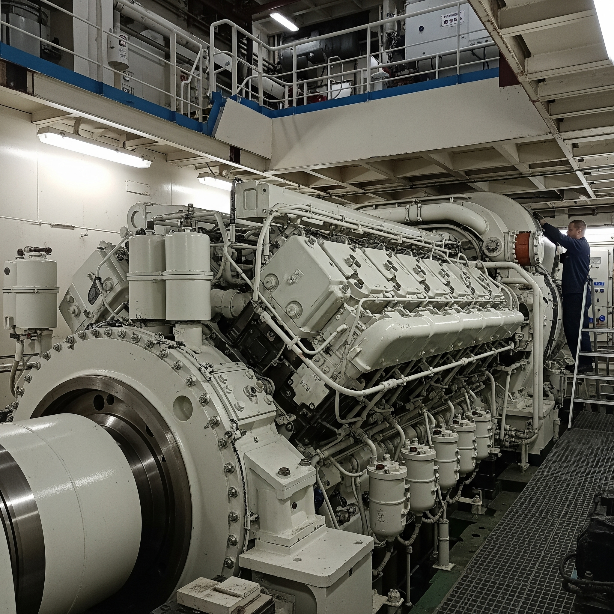

Section1: 総合工学システム学科の概要
総合工学システム学科とは、一般科目（人文社会系科目、理数系科目、保健・体育、外国語科目、芸術等）を学ぶ学科である。 そして、この学科は３つの目的からなる。 多様性の理解と基礎的な学力、広い視野と教養の３つの目的達成によって創造力が豊かな技術者育成を目指す。

Section2: エネルギー機械コース（Mコース）の概要
- ポイント1: 基礎的な機械科の勉強を学べる！
- ポイント2: 分野の派生が広い！
- ポイント3: エネルギーについて学べる！
このエネルギー機械コースは人のより良い暮らしと環境・エネルギーとの共生を実現するための技術の修得を目指すコースである。 その中でも私が推している科目は熱力学である。 なぜなら、このコースはエネルギー機械とあるようにエネルギーを司る技術を取り扱う。 エネルギーを扱う時は熱が基本であり重要になる。よって、このコースのコンセプトでは熱力学を学ぶ必要になってくる。 内容としては、熱やエネルギーの移動とそれによって生じる物質の状態変化を学ぶ物理学の一分野である。 それから、熱機関の効率や化学変化、物質の相変化などに用いる。
